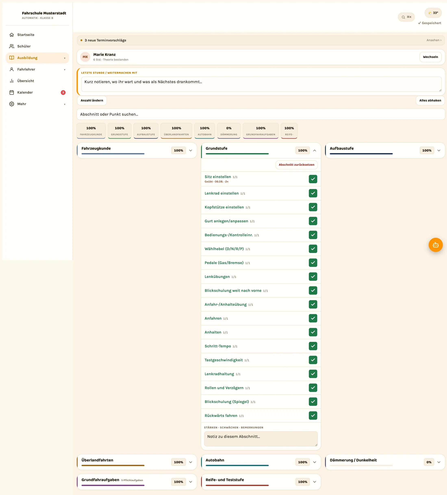

Die Prüfung einmal fahren, bevor sie zählt.
Die Prüfungssimulation läuft wie die praktische Prüfung: Der Timer läuft mit, bewertet wird nach Fahraufgaben und Kompetenzbereichen, und am Ende steht das Ergebnis am Fahrschüler statt auf einem Zettel.
Allindrive ist im Beta-Betrieb. Zugänge vergeben wir persönlich.
So läuft eine Prüfungssimulation.
Du startest sie wie eine normale Fahrstunde, nur mit Bewertungsbogen daneben. Bedient wird sie mit einer Hand, während dein Blick auf dem Verkehr bleibt.
-
Der Timer läuft mit
Sobald die Simulation startet, läuft die Zeit sichtbar mit. Du siehst jederzeit, wie lange die Fahrt schon dauert, ohne im Kopf mitzurechnen.
-
Bewertung nach Fahraufgaben
Jede Fahraufgabe bekommt ihre eigene Bewertung, statt eines Gesamteindrucks am Ende der Stunde. Danach ist nachvollziehbar, woran es lag.
-
Kompetenzbereiche daneben
Neben den einzelnen Aufgaben stehen die Kompetenzbereiche. So wird sichtbar, ob es an einer Situation hakt oder an etwas Grundsätzlichem.
-
KI-Schnelleintrag während der Fahrt
Du sagst in normaler Sprache, was passiert ist, statt zu tippen. Der Eintrag wird dir angezeigt und erst nach deiner Bestätigung gespeichert.
-
Fehler, die wiederkommen
Über mehrere Simulationen hinweg markiert Allindrive, was immer wieder auffällt. Einmal Pech ist etwas anderes als dreimal dieselbe Stelle.
-
Das Ergebnis bleibt am Schüler
Die Simulation liegt beim Fahrschüler, nicht in deinem Notizblock. Auch ein Kollege in Vertretung sieht, wie die letzte gelaufen ist.

Jeder Ring zeigt den Ausbildungsstand. Aufnahme aus der laufenden App, die Namen darin sind erfunden, die Oberfläche ist es nicht.
Die Prüfungsreife-Ampel rechnet, statt zu ahnen.
Grün bekommt ein Fahrschüler nicht, weil du ein gutes Gefühl hast, sondern weil das Pflichtprogramm dokumentiert ist. Die Ampel zieht drei Dinge zusammen, die sonst an drei Stellen liegen.
- Pflicht-Unterrichtseinheiten (UE, 45 Minuten) gegen das Soll, das du je Führerscheinklasse selbst einstellst
- Sonderfahrten, getrennt gezählt nach Überlandfahrt, Autobahnfahrt und Fahrt bei Dunkelheit
- Bewertung aus der digitalen ADK und aus den bisherigen Prüfungssimulationen
Die Ampel rechnet mit deinen eigenen Einträgen und sagt nichts über den Prüfungstag voraus. Fehlt etwas in der Dokumentation, fehlt es auch in der Ampel.
Digitale ADK im Detail
Alle Abschnitte der ADK. Jeder lässt sich aufklappen und Übung für Übung abhaken.
Was auffällt, landet in derselben Karte.
Nach der Simulation musst du nichts übertragen. Die auffälligen Punkte gehören zu den Übungen, an denen sie hängen, und stehen dort beim nächsten Mal wieder. Du steigst an der Stelle ein, statt die Stunde neu zu erfinden.
- Übungen gezielt wiederholen, mit Anzahl der Wiederholungen, Bewertung und Datum
- Passende Strecke aus dem Streckenkatalog wählen und die Fahrt per GPS aufzeichnen
- Ausbildungsnachweis als PDF, von Fahrlehrer und Fahrschüler auf dem Gerät unterschrieben
Schaltkompetenz-Test für B197.
B197 heißt: Der Fahrschüler bildet sich auf einem Automatikfahrzeug aus und weist die Schaltkompetenz gesondert nach. Danach gilt die Fahrerlaubnis auch für Fahrzeuge mit Schaltgetriebe.
Dazu gehören Unterrichtseinheiten auf einem Fahrzeug mit Schaltgetriebe und eine abschließende Testfahrt, die der Fahrlehrer bestätigt. Genau diese Testfahrt führst du in Allindrive: Punkt für Punkt abhaken, im Auto, nicht abends aus dem Gedächtnis.
- Die geprüften Punkte einzeln bewerten, mit Datum und Fahrlehrer
- Ergebnis als PDF, zum Ausdrucken, Ablegen oder Weitergeben
- Der Nachweis liegt beim Fahrschüler in der Software, nicht in einem Ordner im Büro
- Das Soll je Führerscheinklasse stellst du selbst ein, auch für B96 und BF17
Prüfungsversuche festhalten, Quoten ausrechnen lassen.
Was am Prüfungstag passiert ist, weiß nach vier Wochen niemand mehr auswendig. Einmal eingetragen, steht es da und lässt sich zählen.
-
Jeder Versuch wird dokumentiert
Datum, Führerscheinklasse, Ergebnis und der Versuch, um den es ging. Vor dem nächsten Anlauf siehst du, was beim letzten Mal nicht gereicht hat.
-
Quotenpilot: Erfolgsquoten aus deinen Einträgen
Der Quotenpilot zählt aus, wie viele der dokumentierten Prüfungen bestanden wurden. Nach Führerscheinklasse, nach Zeitraum und nach Fahrlehrer.
-
Vergleichen statt schätzen
Läuft eine Klasse anders als die andere, sieht der Herbst anders aus als das Frühjahr? Die Zahlen stehen nebeneinander, das Bauchgefühl bleibt draußen.
-
Grundlage für ein Gespräch, kein Zeugnis
Eine Quote je Fahrlehrer sagt wenig über einen Menschen und viel über einen Anlass, gemeinsam auf die Ausbildung zu schauen.
Der Führerscheinantrag als Schrittliste.
Damit die Frage „Ist der Antrag eigentlich raus?“ nicht drei Wochen vor dem Prüfungstermin gestellt wird. Am Fahrschüler steht, welcher Schritt erledigt ist und was als Nächstes ansteht.
-
1. Antrag bei der Fahrerlaubnisbehörde
Der Antrag auf Erteilung der Fahrerlaubnis geht an die zuständige Behörde. In der Schrittliste hakst du ab, wann er raus ist.
-
2. Sehtest und Erste-Hilfe-Kurs
Beide Bescheinigungen gehören zum Antrag. Ob eine Sehhilfe nötig ist, steht ohnehin in den Stammdaten des Fahrschülers.
-
3. Prüfauftrag abwarten
Ohne Prüfauftrag der Behörde kein Prüfungstermin. Sobald er vorliegt, ist der Schritt erledigt und die Prüfung lässt sich terminieren.
-
4. Theoretische Prüfung
Der Theoriestatus gehört zu den Stammdaten und wird hier abgehakt, sobald die Prüfung bestanden ist.
-
5. Praktische Prüfung
Der Termin steht im Kalender, das Ergebnis wird anschließend als Prüfungsversuch dokumentiert.
Kurz gefragt.
Ersetzt die Prüfungssimulation die praktische Prüfung?
Nein. Die Simulation ist eine Übungsfahrt in deiner Fahrschule, die im Ablauf einer Prüfung nachempfunden ist. Die amtliche Prüfung nimmt weiterhin der Prüfer ab. Allindrive hilft dir nur dabei, den Stand vorher sauber festzuhalten.
Was bedeutet B197 genau?
Die Ausbildung läuft auf einem Automatikfahrzeug, die Schaltkompetenz wird gesondert nachgewiesen: mit Unterrichtseinheiten auf einem Fahrzeug mit Schaltgetriebe und einer Testfahrt, die der Fahrlehrer bestätigt. Wird die Schlüsselzahl 197 eingetragen, gilt die Fahrerlaubnis auch für Schaltfahrzeuge. Allindrive dokumentiert den Test und gibt ihn als PDF aus.
Wann springt die Prüfungsreife-Ampel auf Grün?
Wenn die Pflicht-Unterrichtseinheiten, die Sonderfahrten und die Bewertung so dokumentiert sind, wie du es für die jeweilige Führerscheinklasse eingestellt hast. Die Ampel bewertet deine Dokumentation, nicht den Fahrschüler. Die Entscheidung, ob du ihn anmeldest, bleibt deine.
Steigt meine Bestehensquote durch den Quotenpilot?
Das behaupten wir nicht. Der Quotenpilot rechnet aus, was du eingetragen hast, aufgeschlüsselt nach Klasse, Zeitraum und Fahrlehrer. Was du aus den Zahlen machst, ist Ausbildung und damit deine Arbeit.
Sehen meine Fahrschüler die Simulation auch?
In der Fahrschüler-App sehen sie ihren Ausbildungsstand: ADK-Fortschritt, Sonderfahrten, gefahrene Strecken und Termine. Was du bei einer Simulation notierst, besprichst du wie bisher im Auto.
Probier es an einem Schüler aus.
Nimm einen Fahrschüler, der ohnehin kurz vor der Prüfung steht, und fahr eine Simulation. Danach siehst du am Ergebnis, ob dir die Bewertung so reicht. Das lässt sich nicht auf einer Website entscheiden.